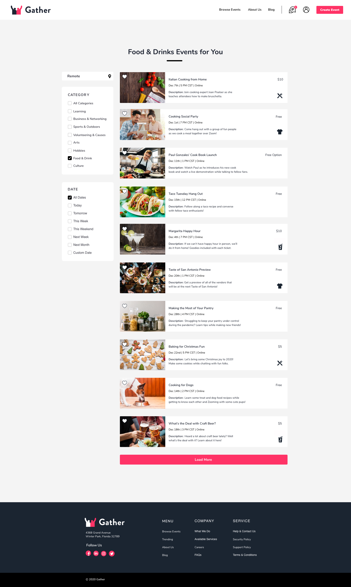
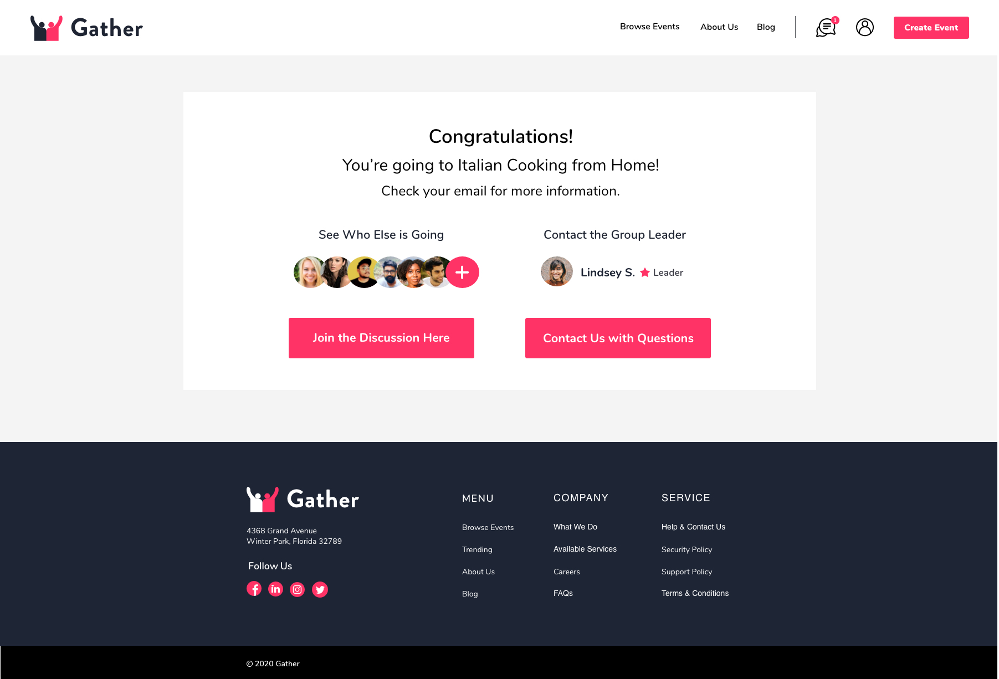
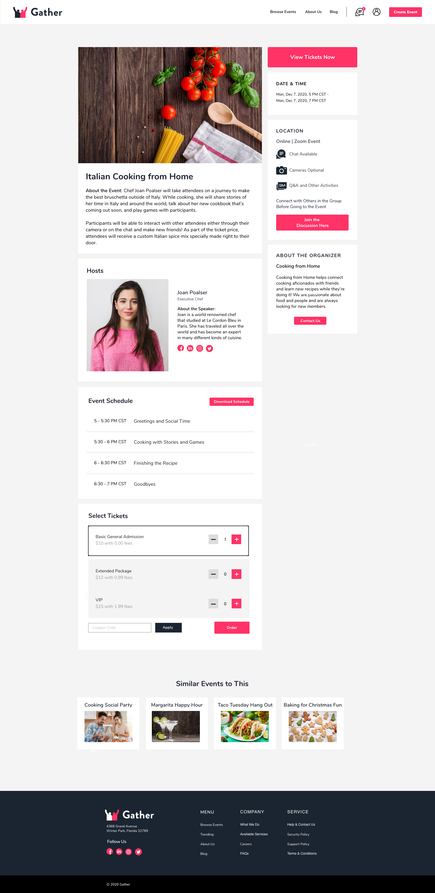
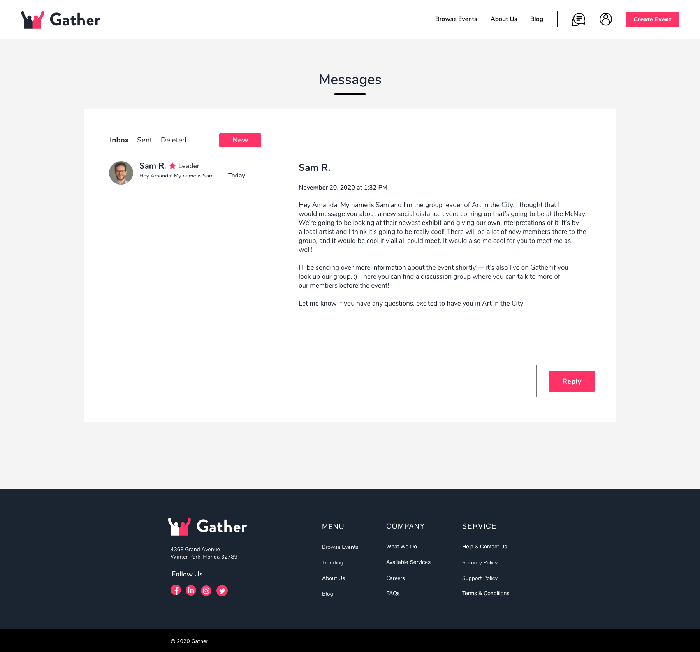
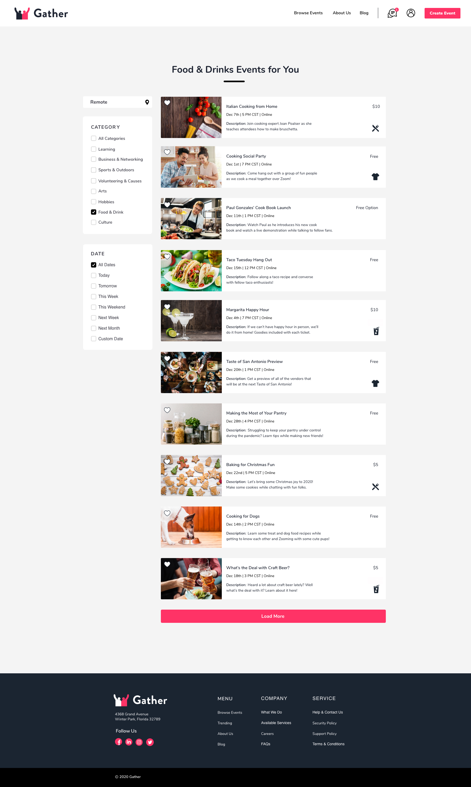
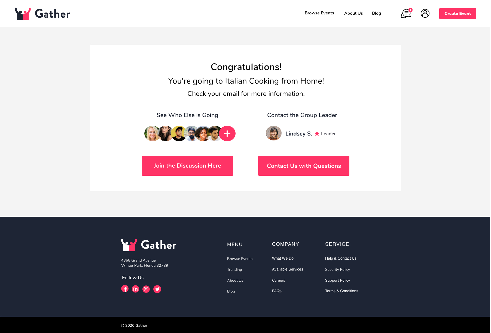
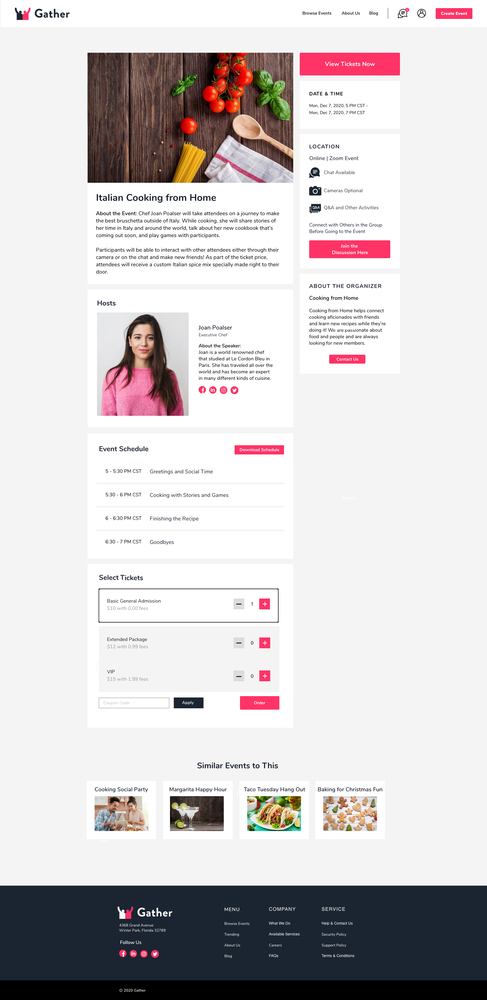
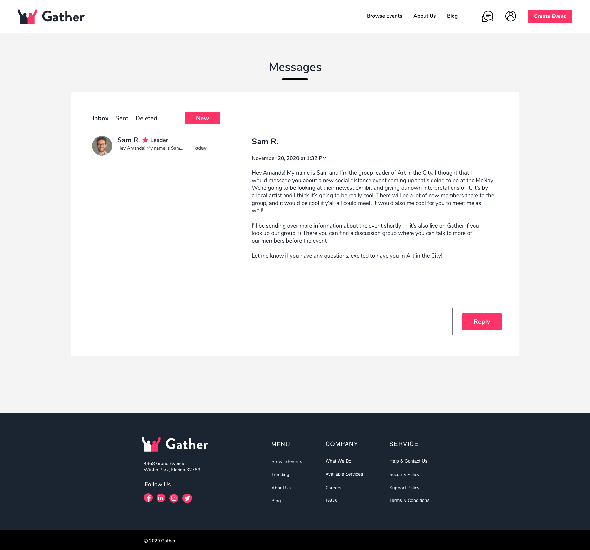

Understanding the Problem and the Solution
I started off by studying industry leaders to see what was already being done in this space and how it could be improved to meet Gather’s goals. I focused on the three leaders Eventbrite, Meetup, and Facebook Events.
There were some obvious pain points to address, such as confusing navigation, overcrowded and busy event details, and limited communication with users.
I knew that it was important to create a friendly design that makes users feel comfortable and encouraged to participate. The interface needed to be easy to navigate and transparent, with a focus on communication. The search function should be robust, clear, and have a variety of categories, options, and filters, along with related sections that are relevant and add to the ease of use. Finally, there needed to be direct COVID-19 information, such as clearly marking what events are remote.

I took the information from my competitive analysis and did secondary research about why people attend events, what makes them comfortable, and how online events and app development play into that. I then did a survey that had 52 respondents, and synthesized that into an affinity map.
Not surprisingly, people are ultimately looking for genuine connection with others. Personalized communication and connecting users with other users make people feel welcomed and less nervous to attend events. To combat anxiety, it’s helpful to show users who else is attending the event, get the group acquainted beforehand by starting discussions, and having a transparent itinerary so that participants know what to expect. Incentives can be helpful such as free food and drinks. Online attendees are 47% more likely to ask questions and 37% more likely to speak to someone than at in person events – remote events due to COVID-19 could help users that are shy, introverted, or have social anxiety. This information was backed up by the survey data.
86.5%
said that they would go to an event more if they knew someone that was going. 59.6% said they would go to an event less if they didn’t know anyone that was going.
Over 50% said they would go to an event more if they knew the group or the person organizing it. Themes also came up.
76.9%
said they would go more if there was an interesting subject matter or theme, and 82.7% said they would to go an event less if they didn’t like the subject matter or theme.
Also, free food and drinks were seen as a positive, with 53.8% saying they would attend an event more with this available.
 






